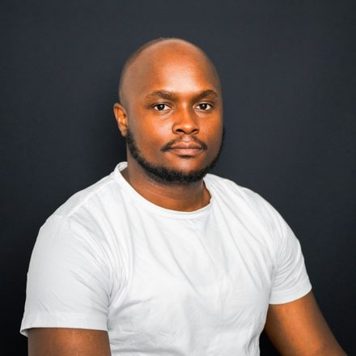

2026
MSc research internship — Multi-objective optimisation for Green AI applied to medical imaging
EFREI Research Lab, six months. Co-supervised with Marwa Harzi.

PhD in computer science · Lecturer-researcher, EFREI Paris — EFREI Research Lab
My work concerns the engineering of responsible computing: sustainable software engineering, frugal and explainable artificial intelligence, and the modelling and simulation of complex systems applied to public health and sustainable development. I treat software systems as socio-technical artefacts subject to environmental, ethical and decision-making constraints.
Design, modelling and evaluation of sustainable software systems under environmental and societal constraints: sustainability as a first-class design concern, evaluation metrics and models, frugal and measurable software architectures.
Multi-objective approaches balancing performance, energy and explainability; comparison of frugal models against deep models; explainability as a precondition for decision-making.
Hybrid models combining mathematics, simulation and learning, applied to health and sustainable development; decision-support scenarios; linking computational results to public decisions.
EFREI Paris — EFREI Research Lab
yvan.guifo-fodjo@efrei.fr
yvanguifo@gmail.com